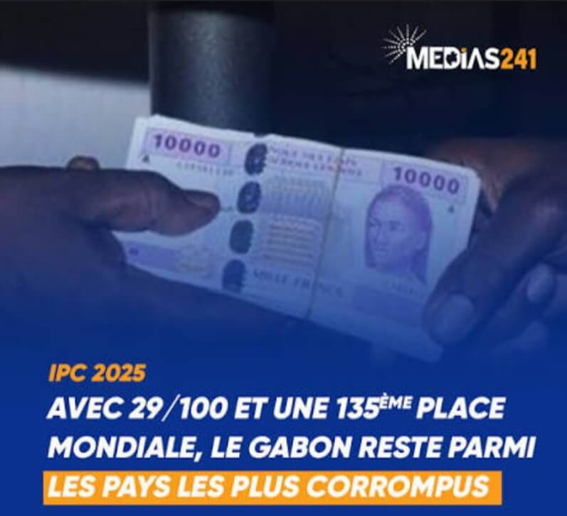
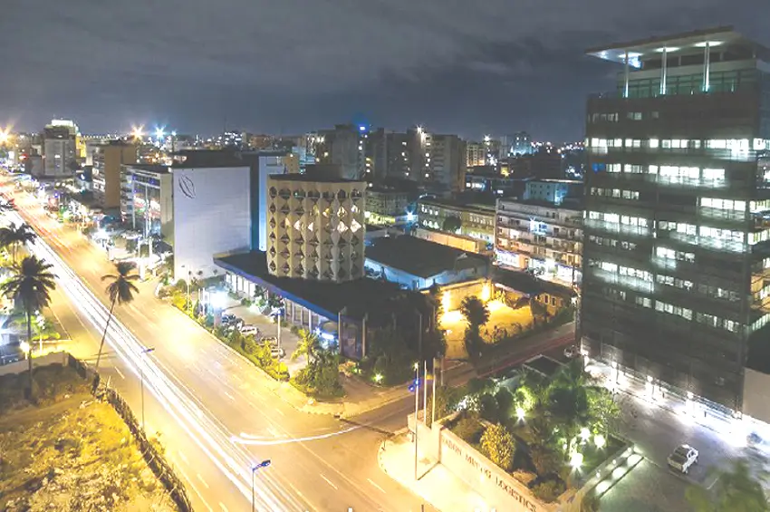
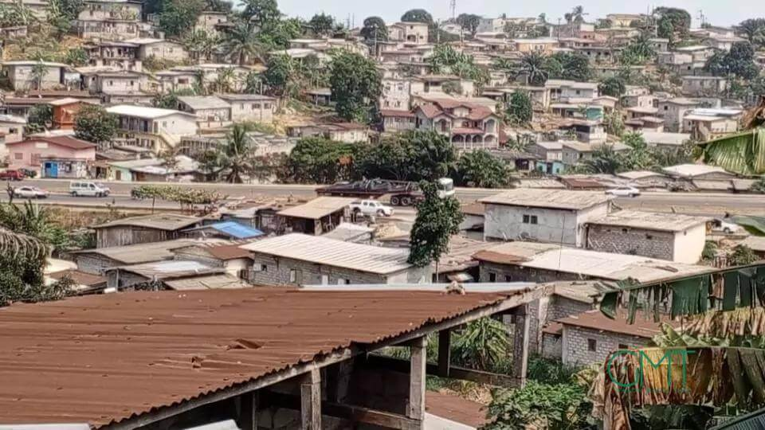

⚠️Mauvaise gouvernance et corruption

Pendant longtemps, le pouvoir a été concentré entre peu de mains, notamment sous Omar Bongo et ensuite Ali Bongo Ondimba.

Pendant longtemps, le pouvoir a été concentré entre peu de mains, notamment sous Omar Bongo et ensuite Ali Bongo Ondimba.
Une partie de l’argent du pétrole est mal utilisée ou détournée, peu de transparence dans la gestion des revenus.
l’argent ne profite pas à toute la population.


C’est un phénomène connu en économie (appelé malédiction des ressources).
Les pays riches en ressources naturelles ont souvent :
plus de corruption;
moins de diversification
plus d’inégalités.
Parce qu’il est “facile” de vivre du pétrole sans développer d’autres secteurs..
Le Gabon dépend fortement du pétrole et des matières premières.
Mais il développe peu :
l’agriculture;
l’industrie locale;
les PME.
peu d’emplois pour les jeunes, économie fragile.
Même si l’État a de l’argent ,certains projets sont mal planifiés ,abandonnés ou concentrés dans certaines zones
Exemple:( Libreville).
développement inégal entre les régions infrastructures, insuffisantes ailleurs.
Les grandes compagnies pétrolières ou minières sont souvent étrangères. Donc une partie des profits quitte le pays,peu de transformation locale (ex : export du bois brut au lieu de produits finis).
Le Gabon pourrait être très prospère pour toute sa population, mais la corruption, la dépendance au pétrole et les inégalités empêchent une vraie redistribution des richesses.
Le problème du Gabon n’est pas le manque de richesses mais plutôt la manière dont elles sont gérées et réparties.
la précarité persistante au Gabon ne s’explique pas par un manque de richesses, mais par une mauvaise gestion, une forte inégalité dans leur répartition et un modèle économique peu créateur d’emplois.
Pour améliorer la situation, il serait nécessaire de mieux redistribuer les revenus, de diversifier l’économie et d’investir davantage dans le développement social.
des image qui devraient faire partir du passé des africains